Last updated: 2015-06-29
Code version: e927fac891c5ab5af9b62b9eecc0232855931c96
First, compared counts via three methods:
Then investigated the relationship between sequencing depth and total molecule count per sample. Found that sequencing depth affects the total molecule count, which in turn affects PC1. Will use TMM-normalize molecule counts per million mapped (cpm) for downstream analyses.
Therefore reran the original comparisons between reads and molecules, but this time using TMM-normalized counts per million for the molecules similar to the reads. The correlation of the mean expression improved.
library("dplyr")
library("ggplot2")
theme_set(theme_bw(base_size = 16))
library("edgeR")
source("functions.R")Input annotation.
anno <- read.table("../data/annotation.txt", header = TRUE,
stringsAsFactors = FALSE)
head(anno) individual batch well sample_id
1 19098 1 A01 NA19098.1.A01
2 19098 1 A02 NA19098.1.A02
3 19098 1 A03 NA19098.1.A03
4 19098 1 A04 NA19098.1.A04
5 19098 1 A05 NA19098.1.A05
6 19098 1 A06 NA19098.1.A06Input read counts.
reads <- read.table("../data/reads.txt", header = TRUE,
stringsAsFactors = FALSE)Input molecule counts.
molecules <- read.table("../data/molecules.txt", header = TRUE,
stringsAsFactors = FALSE)Input molecule counts summed across lanes.
molecules_per_lane <- read.table("../data/molecules-per-lane.txt", header = TRUE,
stringsAsFactors = FALSE)Input list of quality single cells.
quality_single_cells <- scan("../data/quality-single-cells.txt",
what = "character")Keep only the single cells that passed the QC filters and the bulk samples.
reads <- reads[, grepl("bulk", colnames(reads)) |
colnames(reads) %in% quality_single_cells]
molecules <- molecules[, grepl("bulk", colnames(molecules)) |
colnames(molecules) %in% quality_single_cells]
molecules_per_lane <- molecules_per_lane[, grepl("bulk", colnames(molecules_per_lane)) |
colnames(molecules_per_lane) %in% quality_single_cells]
anno <- anno[anno$well == "bulk" | anno$sample_id %in% quality_single_cells, ]
stopifnot(dim(reads) == dim(molecules),
nrow(anno) == ncol(molecules_per_lane))Remove genes with zero read or molecule counts in the single cell or bulk samples.
expressed <- rowSums(reads[anno$well == "bulk"]) > 0 &
rowSums(reads[anno$well != "bulk"]) > 0 &
rowSums(molecules[anno$well == "bulk"]) > 0 &
rowSums(molecules[anno$well != "bulk"]) > 0
reads <- reads[expressed, ]
molecules <- molecules[expressed, ]
molecules_per_lane <- molecules_per_lane[expressed, ]Calculate cpm for the reads data using TMM-normalization.
norm_factors_reads <- calcNormFactors(reads, method = "TMM")
reads_cpm <- cpm(reads, lib.size = colSums(reads) * norm_factors_reads)And for the molecules.
norm_factors_mol <- calcNormFactors(molecules, method = "TMM")
molecules_cpm <- cpm(molecules, lib.size = colSums(molecules) * norm_factors_mol)And for the molecules summed per lane.
norm_factors_mol_per_lane <- calcNormFactors(molecules_per_lane, method = "TMM")
molecules_per_lane_cpm <- cpm(molecules_per_lane,
lib.size = colSums(molecules_per_lane) *
norm_factors_mol_per_lane)Compare the means of each gene obtained via the different methods.
mean_data <- data.frame(reads_cpm = rowMeans(reads_cpm),
molecules = rowMeans(molecules),
molecules_per_lane = rowMeans(molecules_per_lane))
cor(mean_data) reads_cpm molecules molecules_per_lane
reads_cpm 1.0000000 0.8967257 0.8819679
molecules 0.8967257 1.0000000 0.9947502
molecules_per_lane 0.8819679 0.9947502 1.0000000All three are highly correlated.
mean_data$type <- ifelse(grepl("ERCC", rownames(mean_data)), "ERCC", "gene")
ggplot(mean_data, aes(x = reads_cpm, y = molecules)) +
geom_point() +
geom_smooth(method = "lm") +
facet_wrap(~ type)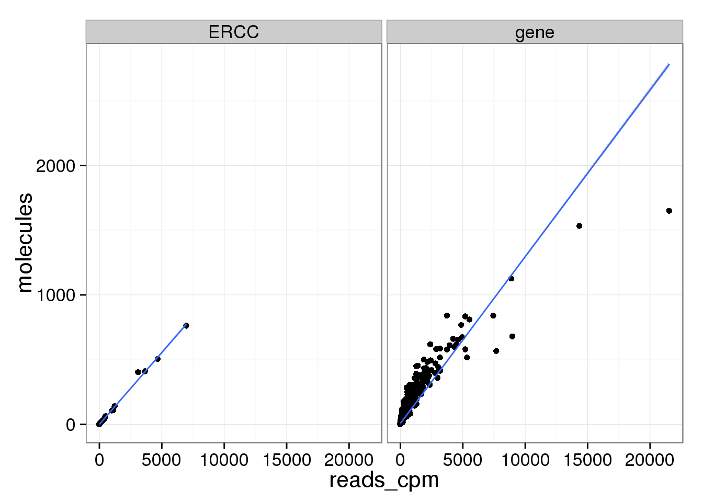
There are only a few genes with molecule counts greater than the number of UMIs.
rownames(molecules)[rowMeans(molecules) > 1024][1] "ENSG00000198712" "ENSG00000198938" "ENSG00000198886"They are highly expressed mitochondrial genes.
ggplot(mean_data, aes(x = reads_cpm, y = molecules)) +
geom_point() +
geom_smooth(method = "lm") +
facet_wrap(~ type) +
ylim(0, 1100)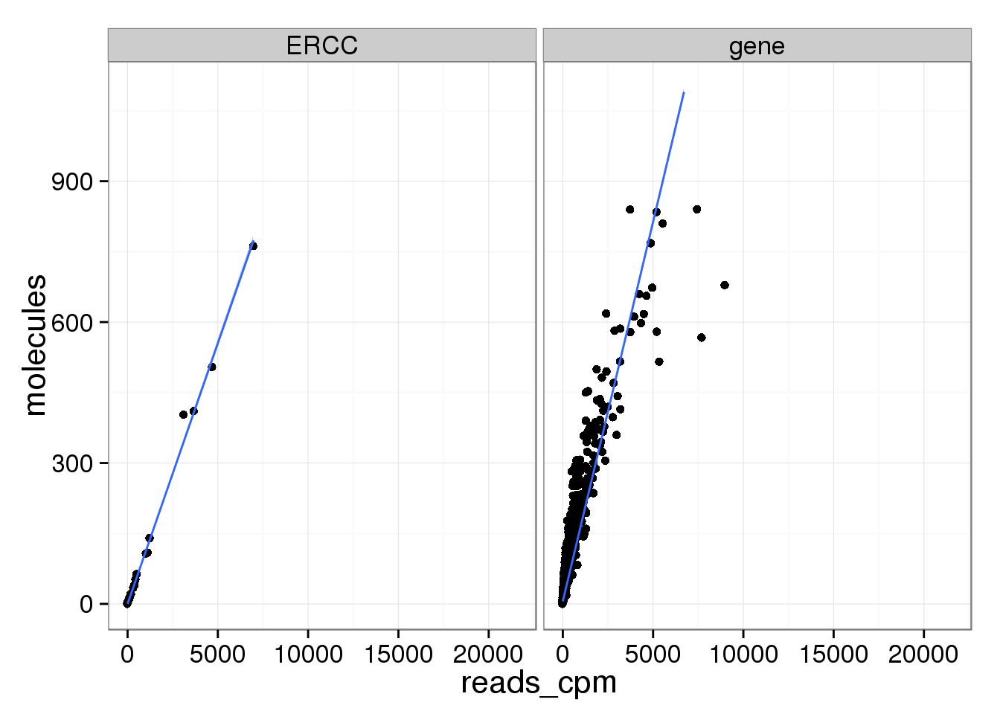
ggplot(mean_data, aes(x = reads_cpm, y = molecules_per_lane)) +
geom_point() +
geom_smooth(method = "lm") +
facet_wrap(~ type)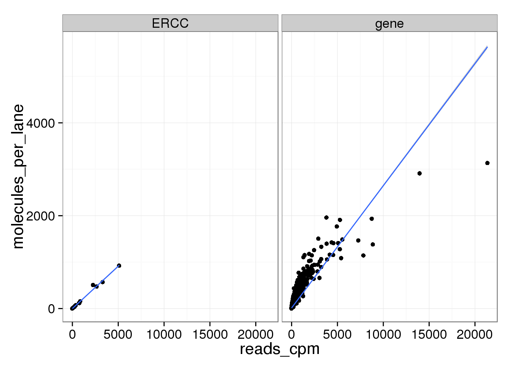
The molecule counts and the molecule counts summed per sequencing lane are highly correlated. This indicates that most of the bias is introduced in the library preparation step and not during sequencing.
ggplot(mean_data, aes(x = molecules_per_lane, y = molecules)) +
geom_point() +
geom_smooth(method = "lm") +
facet_wrap(~ type)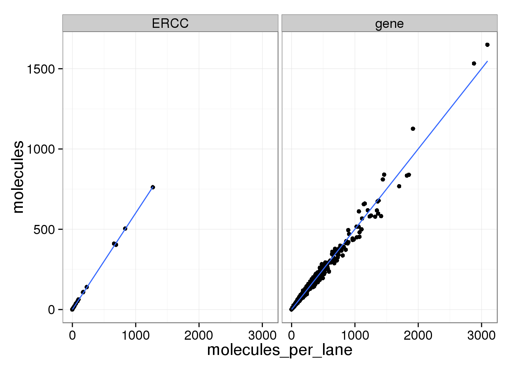
How dependent are the molecule counts on the total molecule count for a given sample? Should we standardize by the total molecule count per sample? Islam et al. 2014 argue that this is not necessary, “scales for molecule-counting scatterplots (Fig. 2d,e) are absolute and would not change appreciably if the number of reads were increased.” Let’s check this assumption.
Does the total number of molecules per sample vary with the total number of reads? If it is not necessary to standardize the molecule counts, the molecule counts should be consistent across varying read depths.
total_reads_single <- colSums(reads)[anno$well != "bulk"] / 10^6
total_molecules_single <- colSums(molecules)[anno$well != "bulk"] / 10^3
plot(total_reads_single, total_molecules_single,
xlab = "Total number of reads (x10^6)",
ylab = "Total number of molecules (x10^3)",
main = "Effect of read depth on single cells",
col = anno$individual[anno$well != "bulk"])
abline(lm(total_molecules_single ~ total_reads_single), col = "red")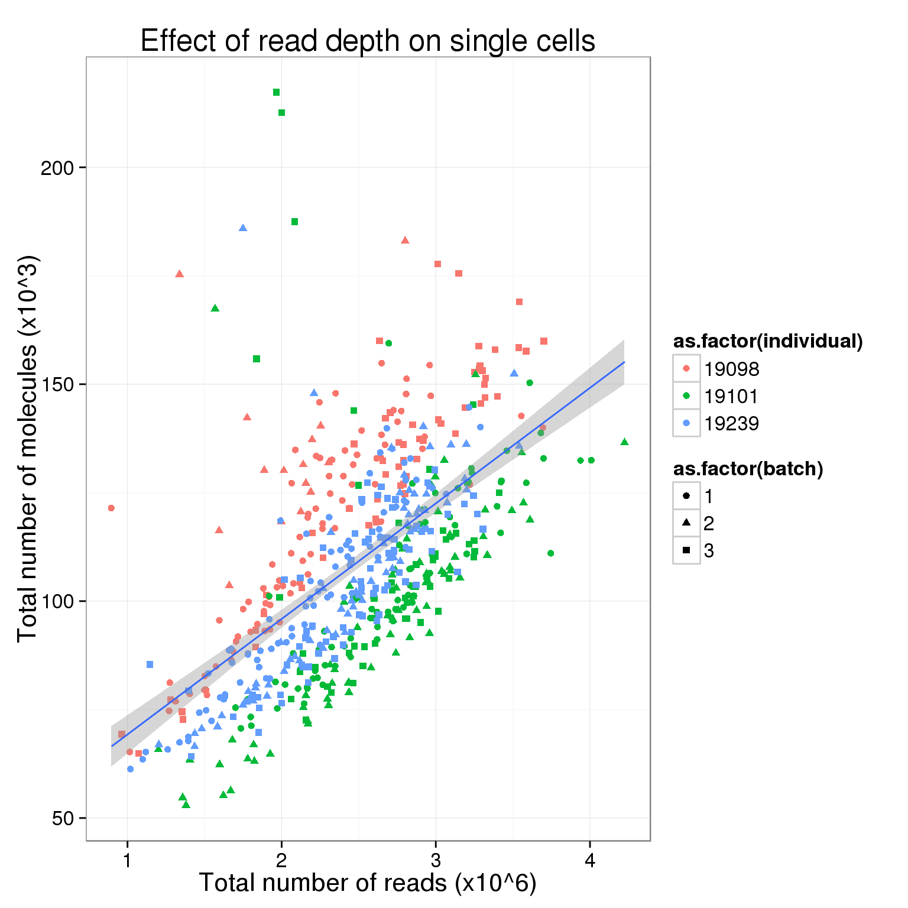
total_reads_bulk <- colSums(reads)[anno$well == "bulk"] / 10^6
total_molecules_bulk <- colSums(molecules)[anno$well == "bulk"] / 10^3
plot(total_reads_bulk, total_molecules_bulk,
xlab = "Total number of reads (x10^6)",
ylab = "Total number of molecules (x10^3)",
main = "Effect of read depth on bulk samples",
col = anno$individual[anno$well == "bulk"],
pch = 19)
abline(lm((total_molecules_bulk) ~ (total_reads_bulk)), col = "red")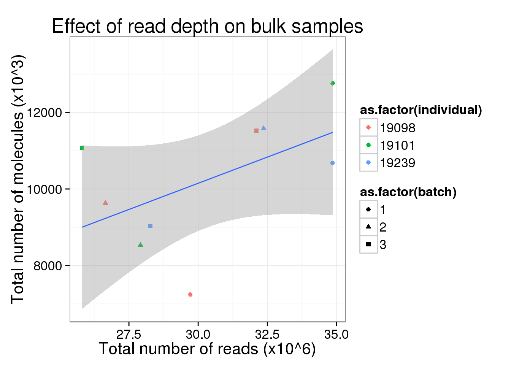
So this is clearly not the case. Perhaps in the ideal case where all the cells are sequenced to saturation, then any increasing sequencing would not make a difference in the molecule counts.
Also, there is a difference in total molecule count between the three individuals.
boxplot(total_molecules_single ~ anno$individual[anno$well != "bulk"],
xlab = "Individual",
ylab = "Molecules (x10^3)",
main = "Total molecule counts vary across individuals",
col = c(19098, 19101, 19239))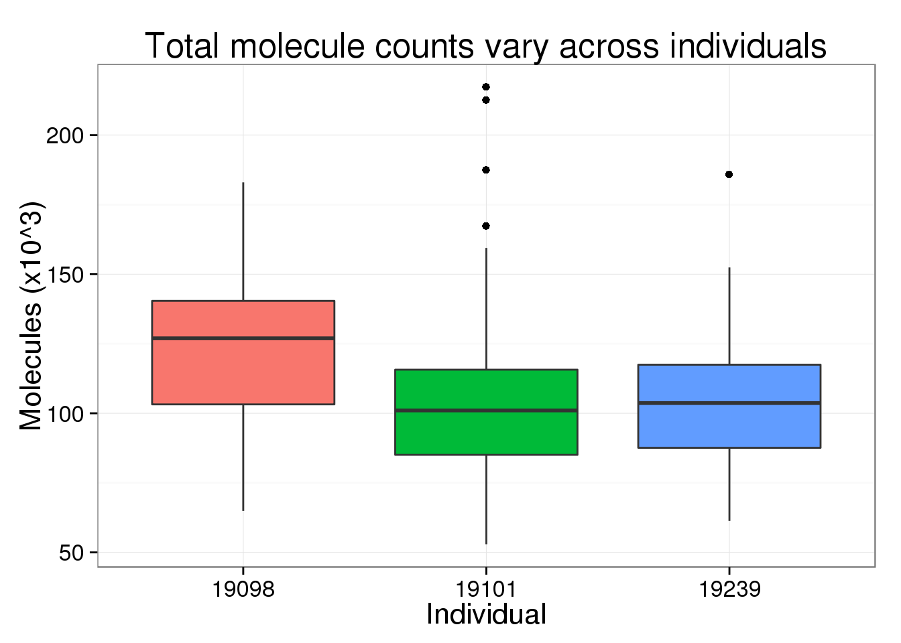
But not for the total number of reads, as expected from the plot above of the effect of read depth where all three individuals span the x-axis of the total number of reads.
boxplot(total_reads_single ~ anno$individual[anno$well != "bulk"],
xlab = "Individual",
ylab = "Reads (x10^6)",
main = "Total read counts vary across individuals",
col = c(19098, 19101, 19239))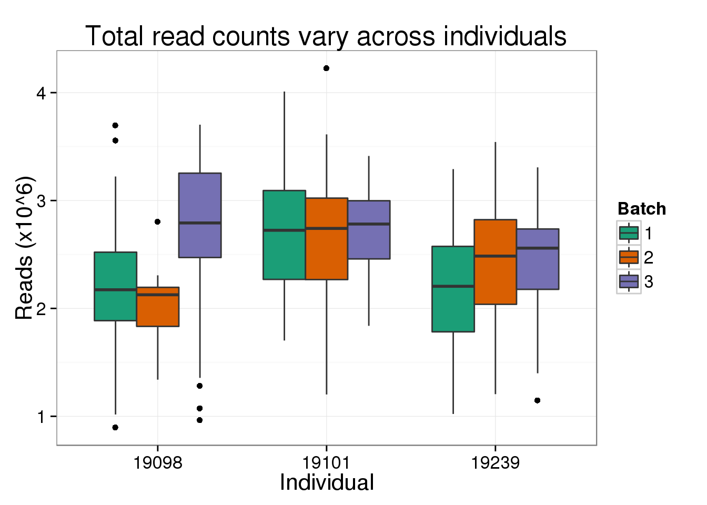
What effect does this difference in total molecule count have in PCA?
pca_single <- run_pca(molecules[, anno$well != "bulk"])plot(pca_single$PCs[, "PC1"], pca_single$PCs[, "PC2"],
col = anno$individual[anno$well != "bulk"],
xlab = "PC1", ylab = "PC2", main = "PCA single cells uncorrected for depth")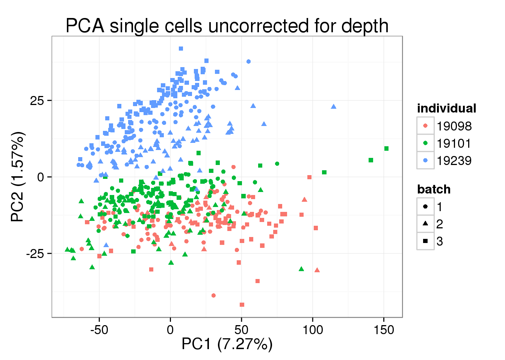
plot(total_molecules_single, pca_single$PCs[, "PC1"],
col = anno$individual[anno$well != "bulk"],
main = sprintf("Pearson r: %.2f",
cor(total_molecules_single, pca_single$PCs[, "PC1"])),
xlab = "Total number of molecules", ylab = "PC1")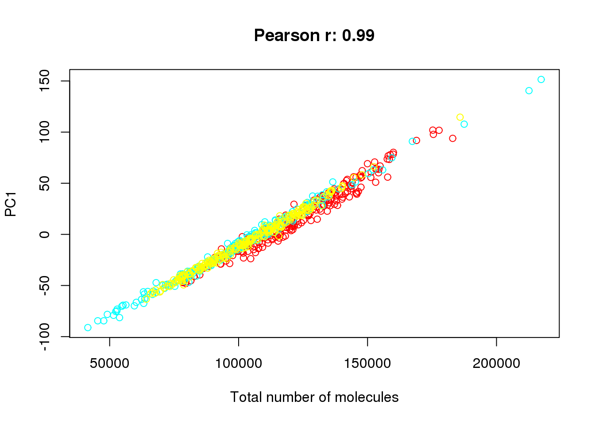
plot(total_molecules_single, pca_single$PCs[, "PC2"],
col = anno$individual[anno$well != "bulk"],
main = sprintf("Pearson r: %.2f",
cor(total_molecules_single, pca_single$PCs[, "PC2"])),
xlab = "Total number of molecules", ylab = "PC2")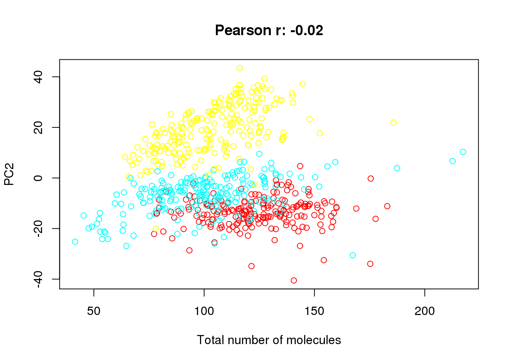
The total molecule depth per sample is highly correlated with PC1. However, it did not affect PC2, which captures the individual effect.
What happens to the PCA results when depth is properly accounted for using TMM-normalized counts per million?
norm_factors_mol_single <- calcNormFactors(molecules[, anno$well != "bulk"],
method = "TMM")
molecules_cpm_single <- cpm(molecules[, anno$well != "bulk"],
lib.size = colSums(molecules[, anno$well != "bulk"]) *
norm_factors_mol_single)pca_single_cpm <- run_pca(molecules_cpm_single)plot(pca_single_cpm$PCs[, "PC1"], pca_single_cpm$PCs[, "PC2"],
col = anno$individual[anno$well != "bulk"],
xlab = "PC1", ylab = "PC2", main = "PCA single cells *corrected* for depth")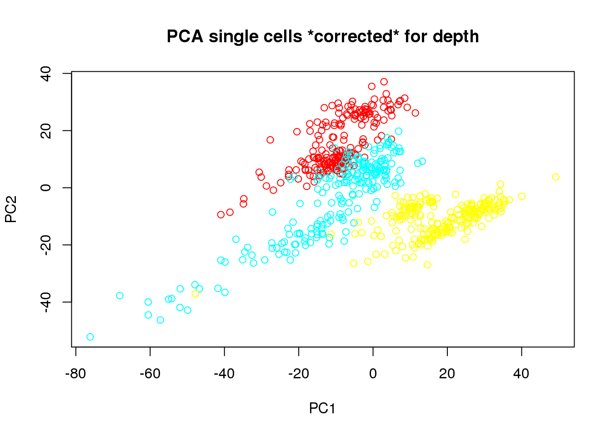
plot(total_molecules_single, pca_single_cpm$PCs[, "PC1"],
col = anno$individual[anno$well != "bulk"],
main = sprintf("Pearson r: %.2f",
cor(total_molecules_single, pca_single_cpm$PCs[, "PC1"])),
xlab = "Total number of molecules", ylab = "PC1")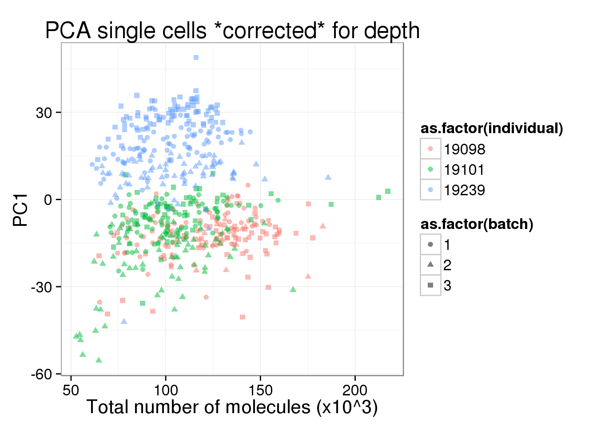
plot(total_molecules_single, pca_single_cpm$PCs[, "PC2"],
col = anno$individual[anno$well != "bulk"],
main = sprintf("Pearson r: %.2f",
cor(total_molecules_single, pca_single_cpm$PCs[, "PC2"])),
xlab = "Total number of molecules", ylab = "PC2")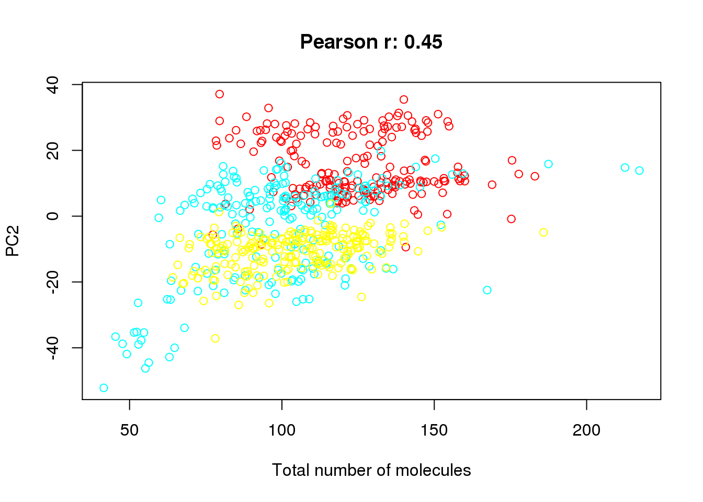
PC1 is no longer associated with sequencing depth!
This time standardize the molecule counts for the sequencing depth.
Compare the means of each gene obtained via the different methods.
mean_data_std <- data.frame(reads_cpm = rowMeans(reads_cpm),
molecules_cpm = rowMeans(molecules_cpm),
molecules_per_lane_cpm = rowMeans(molecules_per_lane_cpm))
cor(mean_data_std) reads_cpm molecules_cpm molecules_per_lane_cpm
reads_cpm 1.0000000 0.9705950 0.9710289
molecules_cpm 0.9705950 1.0000000 0.9986052
molecules_per_lane_cpm 0.9710289 0.9986052 1.0000000All three are even more highly correlated now that the molecules are standardized.
mean_data_std$type <- ifelse(grepl("ERCC", rownames(mean_data_std)), "ERCC", "gene")
ggplot(mean_data_std, aes(x = reads_cpm, y = molecules_cpm)) +
geom_point() +
geom_smooth(method = "lm") +
facet_wrap(~ type)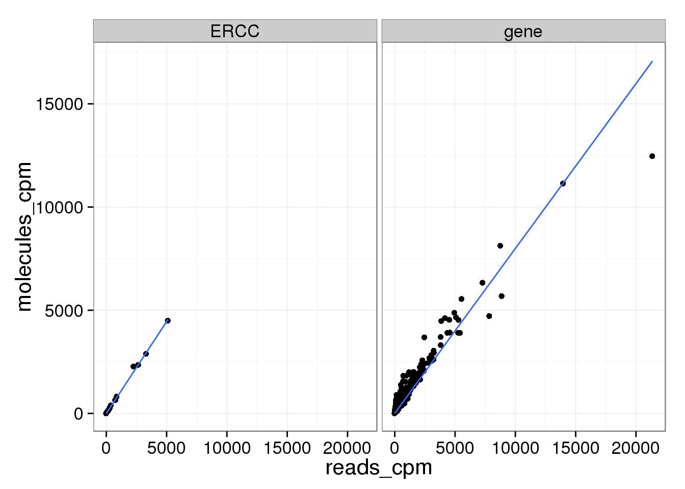
Examining the lower range where most genes are:
ggplot(mean_data_std, aes(x = reads_cpm, y = molecules_cpm)) +
geom_point() +
geom_smooth(method = "lm") +
facet_wrap(~ type) +
ylim(0, 10000)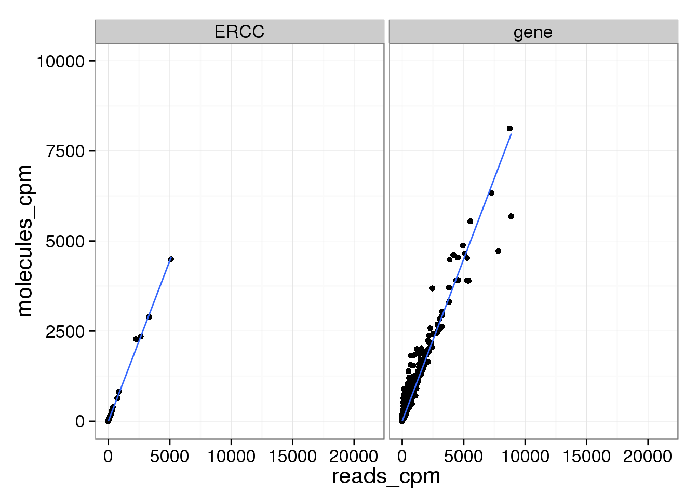
ggplot(mean_data_std, aes(x = reads_cpm, y = molecules_per_lane_cpm)) +
geom_point() +
geom_smooth(method = "lm") +
facet_wrap(~ type)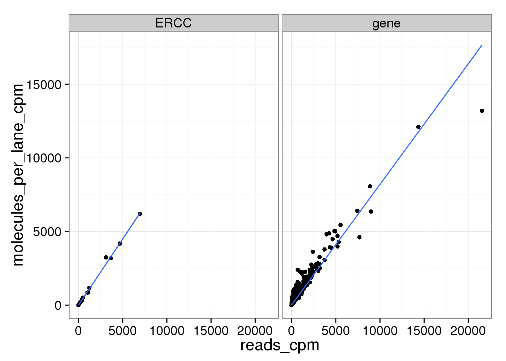
And as above, the molecule counts and the molecule counts summed per sequencing lane are highly correlated, which indicates that most of the bias is introduced in the library preparation step and not during sequencing.
ggplot(mean_data_std, aes(x = molecules_per_lane_cpm, y = molecules_cpm)) +
geom_point() +
geom_smooth(method = "lm") +
facet_wrap(~ type)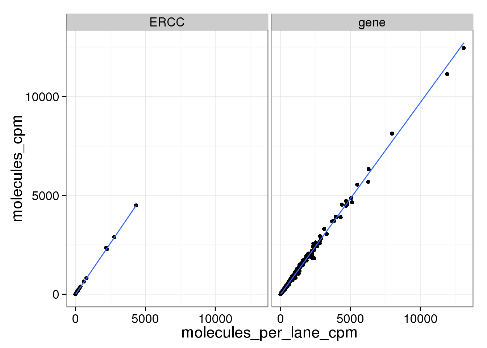
sessionInfo()R version 3.2.0 (2015-04-16)
Platform: x86_64-unknown-linux-gnu (64-bit)
locale:
[1] LC_CTYPE=en_US.UTF-8 LC_NUMERIC=C
[3] LC_TIME=en_US.UTF-8 LC_COLLATE=en_US.UTF-8
[5] LC_MONETARY=en_US.UTF-8 LC_MESSAGES=en_US.UTF-8
[7] LC_PAPER=en_US.UTF-8 LC_NAME=C
[9] LC_ADDRESS=C LC_TELEPHONE=C
[11] LC_MEASUREMENT=en_US.UTF-8 LC_IDENTIFICATION=C
attached base packages:
[1] stats graphics grDevices utils datasets methods base
other attached packages:
[1] edgeR_3.10.2 limma_3.24.9 ggplot2_1.0.1 dplyr_0.4.1 knitr_1.10.5
loaded via a namespace (and not attached):
[1] Rcpp_0.11.6 magrittr_1.5 MASS_7.3-40 munsell_0.4.2
[5] colorspace_1.2-6 stringr_1.0.0 plyr_1.8.2 tools_3.2.0
[9] parallel_3.2.0 grid_3.2.0 gtable_0.1.2 DBI_0.3.1
[13] htmltools_0.2.6 yaml_2.1.13 assertthat_0.1 digest_0.6.8
[17] reshape2_1.4.1 formatR_1.2 evaluate_0.7 rmarkdown_0.6.1
[21] labeling_0.3 stringi_0.4-1 scales_0.2.4 proto_0.3-10